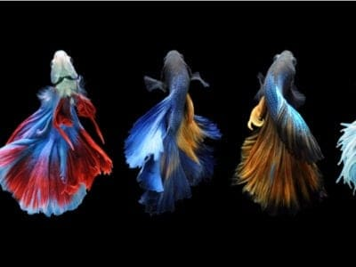
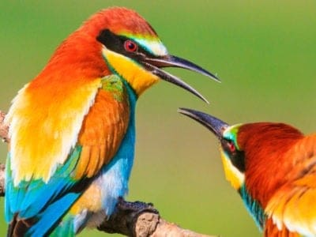
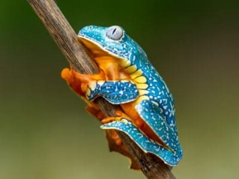
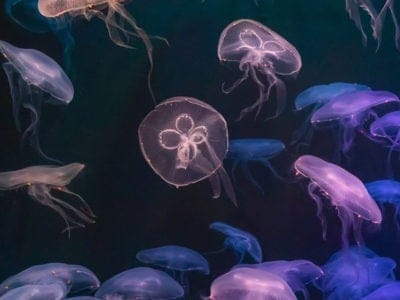
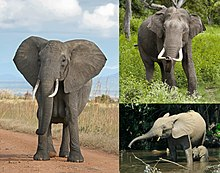
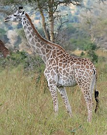
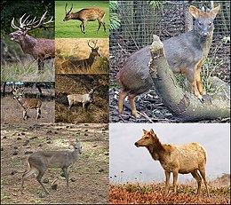
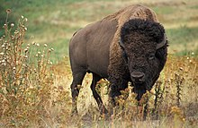

-
Mammals

The official mammal class is Mammalia. Animals that are considered mammals include warm-blooded vertebrates that have hair or fur and whose babies drink milk. Unlike other animal types like birds and insects, all mammal babies drink milk that comes from their mother’s bodies. This is one of the key ways to know if an animal is a mammal.
-
Reptile

Lizards, dinosaurs, crocodiles, turtles, and snakes – all belong to that ancient and stout class of animals known as the reptiles. This is a diverse group with more than 10,000 different species and a huge representation in the fossil record. Once the dominant land vertebrates on the planet, reptiles still occupy just about every single ecosystem outside of the extreme north and south.
-
Fish

Fish are aquatic vertebrates. They usually have gills, paired fins, a long body covered with scales, and tend to be cold-blooded. “Fish” is a term used to refer to lampreys, sharks, coelacanths and ray-finned fishes, but is not a taxonomic group, which is a clade or group containing a common ancestor and all its descendants.
-
Birds

Birds, members of the class Aves, include more than 10,400 living species. Their feathers distinguish them from all other classes of animal; no other animals on earth have them. If you see an animal with feathers, it’s undoubtedly a bird. Like mammals, birds are warm-blooded vertebrates with four-chambered hearts. However, they are more closely related to reptiles and are believed to have evolved from dinosaurs.
-
Amphibians

The official class of amphibians is Amphibia. To have the classification of an amphibian, an animal must be a vertebrate, require water to survive, be cold-blooded, and spend time both on land and in water. Though other animals only live on land or in the water, amphibians have the unique ability to thrive equally in both. Amphibians cover over 6,000 different species across the globe, but about 90% are frogs.
-
Invertebrates

The definition of an invertebrate is any animal that does not have a backbone or vertebral column. The most prolific and easily recognizable members of the invertebrate family are insects. It’s estimated that upwards of 30 million individual species of invertebrates may exist accounting for between 90-95 percent of all organisms on the planet.
-
Insects
All insects are part of the taxonomical phylum Arthropoda, and they are collectively referred to as arthropods. It is common to see this name misspelled as “anthropod,” but this is not the correct term. They can be found in nearly every environment on the planet, and they currently account for over half of all known living organisms in the world. They have undergone many cycles of evolution depending on the resources available to them.
-
Elephant

Elephants are the largest existing land animals. Three living species are currently recognised: the African bush elephant, the African forest elephant, and the Asian elephant. They are the only surviving members of the family Elephantidae and the order Proboscidea. The order was formerly much more diverse during the Pleistocene, but most species became extinct during the Late Pleistocene epoch. Distinctive features of elephants include a long proboscis called a trunk, tusks, large ear flaps, pillar-like legs, and tough but sensitive skin. The trunk is used for breathing and is prehensile, bringing food and water to the mouth, and grasping objects. Tusks, which are derived from the incisor teeth, serve both as weapons and as tools for moving objects and digging. The large ear flaps assist in maintaining a constant body temperature as well as in communication. African elephants have larger ears and concave backs, whereas Asian elephants have smaller ears, and convex or level backs.
-
Dog
The dog (Canis familiaris or Canis lupus familiaris) is a domesticated descendant of the wolf. Also called the domestic dog, it is derived from the extinct Pleistocene wolf,and the modern wolf is the dog's nearest living relative. Dogs were the first species to be domesticated[9][8] by hunter-gatherers over 15,000 years ago before the development of agriculture.[1] Due to their long association with humans, dogs have expanded to a large number of domestic individuals[10] and gained the ability to thrive on a starch-rich diet that would be inadequate for other canids.
-
Cat

The cat (Felis catus) is a domestic species of small carnivorous mammal. It is the only domesticated species in the family Felidae and is commonly referred to as the domestic cat or house cat to distinguish it from the wild members of the family.Cats are commonly kept as house pets but can also be farm cats or feral cats; the feral cat ranges freely and avoids human contact.Domestic cats are valued by humans for companionship and their ability to kill rodents. About 60 cat breeds are recognized by various cat registries.
-
Giraffe

The giraffe is a large African hoofed mammal belonging to the genus Giraffa. It is the tallest living terrestrial animal and the largest ruminant on Earth. Traditionally, giraffes were thought to be one species, Giraffa camelopardalis, with nine subspecies. Most recently, researchers proposed dividing them into up to eight extant species due to new research into their mitochondrial and nuclear DNA, as well as morphological measurements. Seven other extinct species of Giraffa are known from the fossil record.
-
Monkey

Monkey is a common name that may refer to most mammals of the infraorder Simiiformes, also known as the simians. Traditionally, all animals in the group now known as simians are counted as monkeys except the apes, which constitutes an incomplete paraphyletic grouping; however, in the broader sense based on cladistics, apes (Hominoidea) are also included, making the terms monkeys and simians synonyms in regards to their scope.[citation needed]
-
Horse

The horse (Equus ferus caballus)is a domesticated, one-toed, hoofed mammal. It belongs to the taxonomic family Equidae and is one of two extant subspecies of Equus ferus. The horse has evolved over the past 45 to 55 million years from a small multi-toed creature, Eohippus, into the large, single-toed animal of today. Humans began domesticating horses around 4000 BCE, and their domestication is believed to have been widespread by 3000 BCE. Horses in the subspecies caballus are domesticated, although some domesticated populations live in the wild as feral horses. These feral populations are not true wild horses, as this term is used to describe horses that have never been domesticated. There is an extensive, specialized vocabulary used to describe equine-related concepts, covering everything from anatomy to life stages, size, colors, markings, breeds, locomotion, and behavior.
-
Donkey

The domestic donkey is a hoofed mammal in the family Equidae, the same family as the horse. It derives from the African wild ass, Equus africanus, and may be classified either as a subspecies thereof, Equus africanus asinus, or as a separate species, Equus asinus. It was domesticated in Africa some 5000–7000 years ago,and has been used mainly as a working animal since that time.
-
Deer

Deer or true deer are hoofed ruminant mammals forming the family Cervidae. The two main groups of deer are the Cervinae, including the muntjac, the elk (wapiti), the red deer, and the fallow deer; and the Capreolinae, including the reindeer (caribou), white-tailed deer, the roe deer, and the moose. Male deer of all species (except the water deer), as well as female reindeer, grow and shed new antlers each year. In this they differ from permanently horned antelope, which are part of a different family (Bovidae) within the same order of even-toed ungulates (Artiodactyla).
-
Cattle

Cattle (Bos taurus) are large, domesticated, cloven-hooved, herbivores. They are a prominent modern member of the subfamily Bovinae and the most widespread species of the genus Bos. Adult females are referred to as cows and adult males are referred to as bulls.
-
Goat

The goat or domestic goat (Capra hircus) is a domesticated species of goat-antelope typically kept as livestock. It was domesticated from the wild goat (C. aegagrus) of Southwest Asia and Eastern Europe. The goat is a member of the animal family Bovidae and the tribe Caprini, meaning it is closely related to the sheep. There are over 300 distinct breeds of goat. It is one of the oldest domesticated species of animal, according to archaeological evidence that its earliest domestication occurred in Iran at 10,000 calibrated calendar years ago.
-
Bison

Bison are large bovines in the genus Bison within the tribe Bovini. Two extant and numerous extinct species are recognised.
-
Bear

Bears are carnivoran mammals of the family Ursidae. They are classified as caniforms, or doglike carnivorans. Although only eight species of bears are extant, they are widespread, appearing in a wide variety of habitats throughout the Northern Hemisphere and partially in the Southern Hemisphere. Bears are found on the continents of North America, South America, Europe, and Asia. Common characteristics of modern bears include large bodies with stocky legs, long snouts, small rounded ears, shaggy hair, plantigrade paws with five nonretractile claws, and short tails.
-
Lion

The lion (Panthera leo) is a large cat of the genus Panthera native to Africa and India. It has a muscular, broad-chested body; short, rounded head; round ears; and a hairy tuft at the end of its tail. It is sexually dimorphic; adult male lions are larger than females and have a prominent mane. It is a social species, forming groups called prides. A lion's pride consists of a few adult males, related females, and cubs. Groups of female lions usually hunt together, preying mostly on large ungulates. The lion is an apex and keystone predator; although some lions scavenge when opportunities occur and have been known to hunt humans, lions typically do not actively seek out and prey on humans.